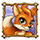

5-reel 25-line slots
The objective of Fortunes Of The Fox is to obtain winning symbol combinations by spinning the reels.
To play the game:
- Line bets are chosen by clicking + and - below Line Bet to increase or decrease the amount.
- Paylines can be activated and their shape displayed by progressively clicking + and – below Lines. Paylines can also be activated by using the numbered buttons on either side of the reels. Selecting a high payline includes all the lower ones too. For example, selecting payline 6 also activates paylines 1 through 5. Clicking Bet Max activates all paylines with the currently selected bet per line and spins the reels.
- Total bet per game round = line bet X active paylines.
- Clicking Spin spins the reels with the current selection of lines and line bets. During the reel spin the Spin button changes intoStop. Clicking Stop ends the spin animation and immediately displays the spin result.
- Reels can also be spun using the Auto Play function. Mouse over the Auto Play button to display the list of options. Select the number of spins to be played automatically or choose Until Feature to spin until the Lucky Grapes Bonus or Bonfire Free Games are triggered. Clicking on an option starts the Auto Play function. The Auto Play button changes into Stop during the Auto Play mode. The Auto Play mode ends when the reels have been spun the number of times determined by the player, or when the Lucky Grapes Bonus or Bonfire Free Games are triggered if you chose Until Feature, or when you click Stop.
- Clicking the Turbo Mode button switches on or off the Turbo Mode thus turning on or off some of the win animations and sounds, and making the reels spin faster or slower.
- Wins are calculated according to the paytable. Line win = line bet X corresponding multiplier according to the paytable. Scatter win = total bet X corresponding multiplier according to the paytable. The paytable can be accessed via the Info page.
- On a given payline, only the highest payline winning combination pays while simultaneous winnings on different paylines are added up together.
- In case of a winning spin, the Win field displays the accumulating winnings. The Win ticker can be stopped by clicking anywhere on the screen to display the total win amount immediately.
- Payline wins and the total win are also displayed on the strip located at the bottom of the reels or the game window.
Info page:
- Clicking Info opens the reference screen describing different game components. Clicking the arrow buttons at the lower right-hand corner of the screen enables navigating between the different info screens.
- The Paytable screen shows all winning combinations. When opened after a winning spin, the winning symbol combinations (number of symbols and bet multiplier) are highlighted and blink.
- The Bonfire Free Games screen describes how the feature is triggered and what its rules are.
- The Lucky Grapes Bonus screen explains the symbol combination that triggers the bonus round and also its rules.
- The Paylines screen illustrates all possible payline combinations and explains the payout rules in the game.
- Clicking Back exits the Info screen and returns to the game.
Paylines:
- Active paylines are represented by lines that appear over the reels as illustrated in the Paylines screen of the Info page.
- Only active paylines can register wins.
- There is a difference between the line bet and the total bet. The line bet shows how much is being bet on a single payline. The total bet shows how much is being bet in total on the game round. Payouts shown in the paytable are multiplied by the line bet.
The Scatter symbol is an exception to these rules. More information about the Scatter symbol can be found below.
About payouts:
- Payouts are listed on the Paytable screen. To find the possible win amount, the line bet must be multiplied by the payout.
- If two payline winning combinations occur on the same line, the higher of them is paid out. If more than one active payline has a winning combination, the winnings are accumulated.
- Winning combinations must start from the left most reel, and the symbols have to be consecutive.
The Scatter symbol is an exception to these rules. More information about the Scatter symbol can be found below.
Wild Symbol
The Wild symbol  appears on reels #2, #3 and #4 both during main game and the Free Games and can stand for all symbols, other than  , to make the best possible winning combinations.
, to make the best possible winning combinations.
3 appearing anywhere on these reels during main game trigger the Bonfire Free Games. More information on the free games round can be found here.
Note:
- Wild combinations have no payout of their own.
Scatter Symbol
The Scatter symbols do not have to occur on any particular payline and appear both during main game and the Free Games.
2 or more appearing during main game multiply the payout by the total bet and add it to any possible payline winnings, as shown in the Paytable.
In addition, 3 or more appearing simultaneously anywhere on the reels trigger the Lucky Grapes Bonus, as explained below.
Lucky Grapes Bonus
The Lucky Grapes Bonus is triggered by the simultaneous appearance of 3 or more .
To start the Bonus round click on Click to Start.
Pick 1 out of 6 bunches of grapes by clicking on it on the screen that appears next. Foxy will then jump on her trampoline to get at the grapes, each grape collected awards a bonus cash prize until the trampoline breaks down. During a bonus round Foxy cannot jump more than 6 times winning 6 cash prizes respectively. If you have been awarded less than 6 cash prizes before the trampoline breaks down, a consolation prize will be awarded as well.
Note:
- If the Lucky Grapes Bonus has been triggered during the Bonfire Free Games, the free games are interrupted for the bonus to take place and resume after it has been played out.
At the end of the Lucky Grapes Bonus, a win screen displays your winnings. Click Continue to return to the main game.
3 appearing simultaneously anywhere on reels #2, #3 and #4 during main game trigger 15 Bonfire Free Games with a multiplier of x3.
3 appearing simultaneously anywhere on these reels during the Bonfire Free Games retrigger 15 more free games with X3 Multiplier. In this way the Bonfire Free Games can be infinitely retriggered.
Note:
- Any winnings occurring from the Lucky Grapes Bonus if triggered during the Bonfire Free Games, will be added to your free games winnings but will not be tripled.
During the Free Games, the reels are spun automatically using the same number of lines and bets per line as on the spin that won the Free Games round. After each spin, the win is displayed in the Win field. The Free Games Win field shows the accumulated winnings from the current Free Games.
After all Free Games have been completed, a result board summarizes the winnings. Game Win shows the winnings that were received from the spin that won the Free Games. Feature Win shows the winnings that were received during the Free Games. Total Win shows the accumulated winnings (Game Win and Feature Win added up).
Clicking Continue will return you to the main game. When returning to the main game, clicking anywhere on the screen stops the win ticker and displays the full prize.
If the Free Games have been triggered during the Auto Play mode, the Free Games round begins after the player clicks on Click to Start. When all Free Games have been played and the player clicks Continue on the screen summarizing the Free Games win, the Auto Play mode resumes. When returning to the main game, clicking anywhere on the screen stops the win ticker and displays the full prize.
Return to Player
The theoretical percentage return to player (RTP) is 95.11%.